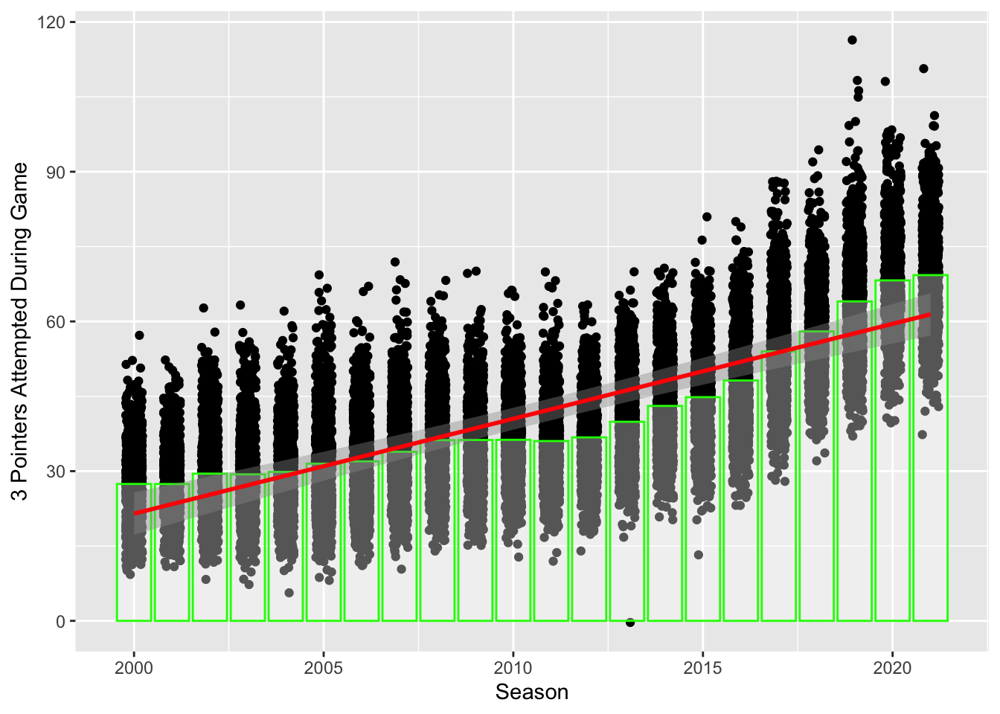
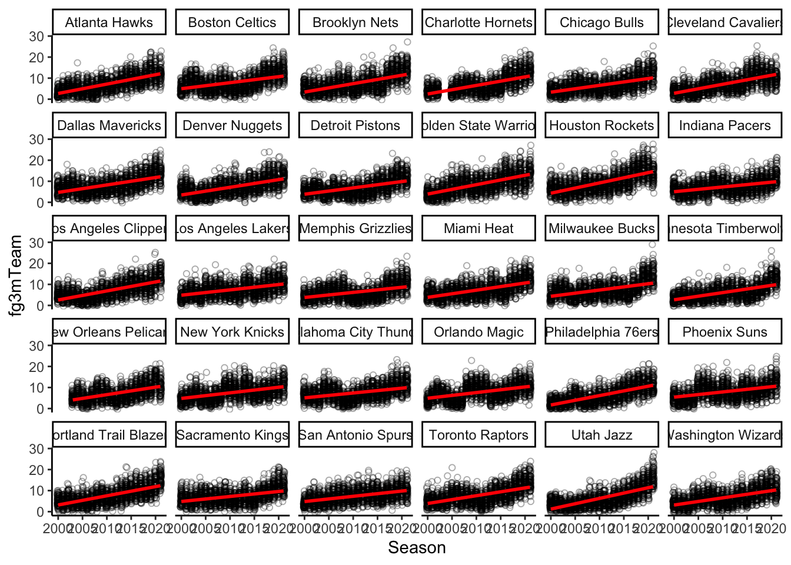
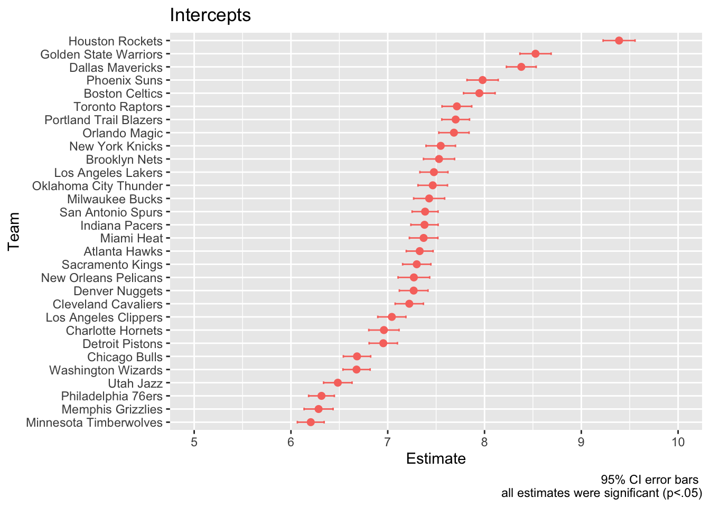
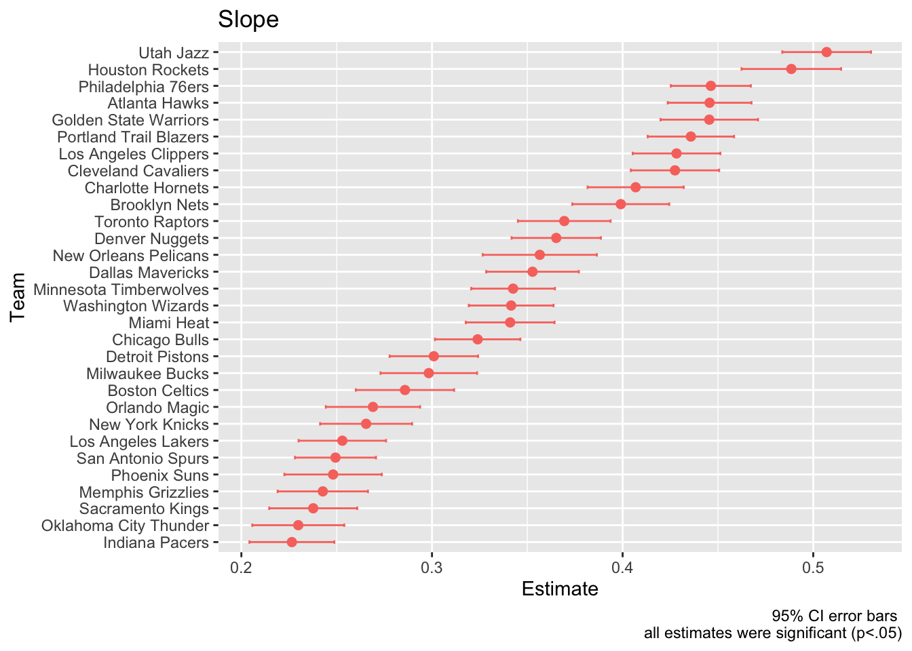
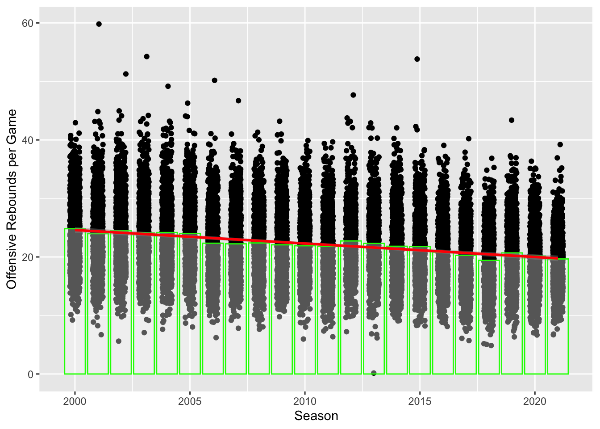
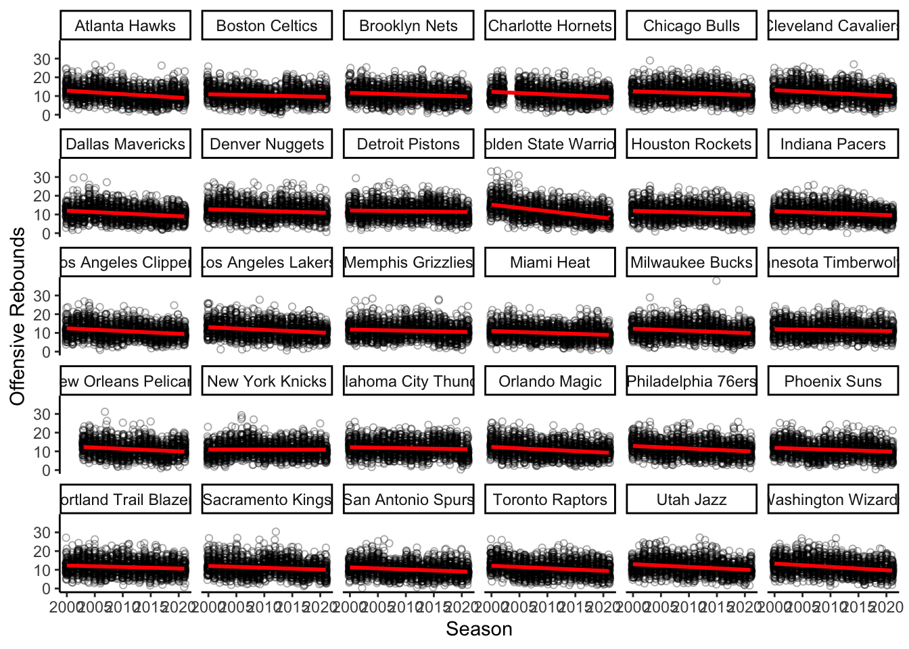
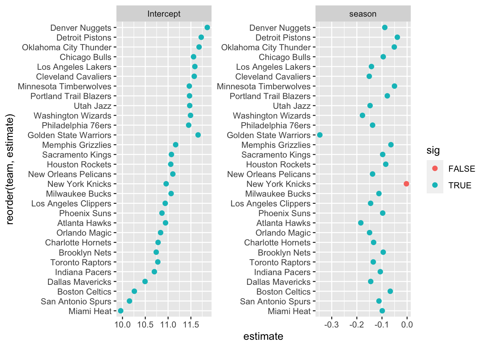
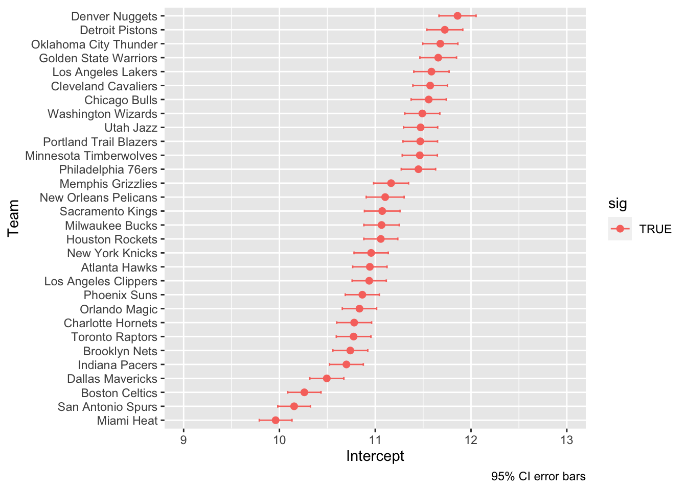
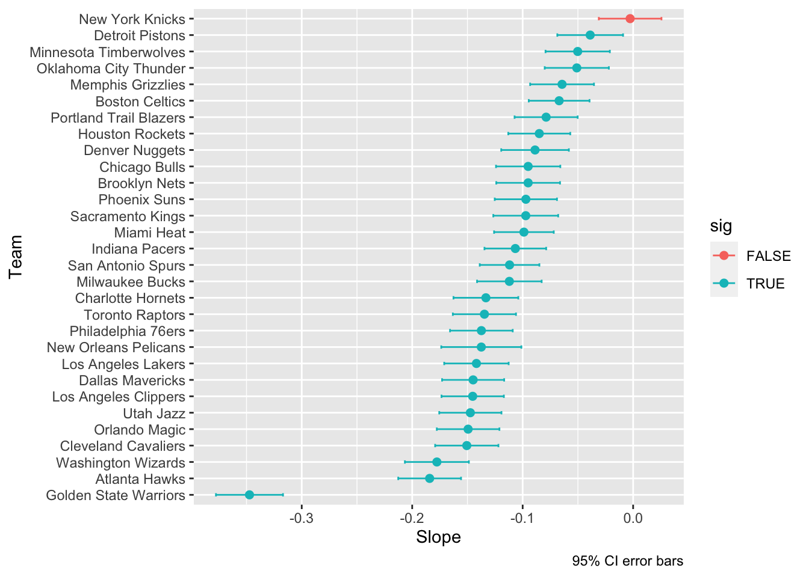

It seems over the past several years that three point shooting has been skyrocketing in the NBA. We wanted to see if this increase in three point shooting was true, and quantify this increase across 21 years, from 2000-2021.
First we prepped out data space:
source("R-Prep.R")Here is how we simplified and prepared the data:
source("DataAnalysisNBA.R")
#put hyperlinkIf you want to see the above script, go here.
This is how we extracted the data:
games_3ptsa_sum <-
rs_game_logs %>%
select(idGame, fg3aTeam, yearSeason) %>%
group_by(idGame, yearSeason) %>%
summarise(fg3a_sum = sum(fg3aTeam)) %>%
ungroup()Then we calculated the mean three pointers and visualized them over the last twenty-one years:
mean_3ptsa_season <- games_3ptsa_sum %>%
group_by(yearSeason)%>%
summarise(mean_3ptsa_sum = mean(fg3a_sum))%>%
ungroup()
ggplot(data = mean_3ptsa_season, aes(x = yearSeason, y = mean_3ptsa_sum))+
geom_point(data = games_3ptsa_sum,
aes(x = yearSeason, y = fg3a_sum),
position = position_jitter(.22))+
geom_bar(stat = "identity", fill = "white", alpha = 1/3, color = "green")+
geom_smooth(method = "lm", color = "red")+
labs(x = "Season", y = "3 Pointers Attempted During Game")
The plot revealed that there was a clear increase in three pointers made over the last twenty-one years in the NBA. We decided to further explore this topic to see if this true for all thirty teams.
We extracted the data using:
orebfg3_data <-
rs_game_logs %>%
select(
season = yearSeason,
team = nameTeam,
teamid = idTeam,
idGame, fg3mTeam,
orebTeam
)
# A solution for having each teamid match up with one team name:
team_names <-
orebfg3_data %>%
select(team, teamid) %>%
distinct() %>%
arrange(teamid)
# These are the teams with repeat names
repeats <-
team_names %>%
count(teamid) %>%
filter(n>1)
# our chosen names (what they are named today)
new_names <-
repeats %>%
left_join(., team_names, by = "teamid") %>%
mutate(
name = case_when(
teamid == 1610612740 ~ "New Orleans Pelicans",
teamid == 1610612746 ~ "Los Angeles Clippers" ,
teamid == 1610612751 ~ "Brooklyn Nets" ,
teamid == 1610612760 ~ "Oklahoma City Thunder" ,
teamid == 1610612763 ~ "Memphis Grizzlies" ,
teamid == 1610612766 ~ "Charlotte Hornets"
)
)
# Gathering data for the new names
replace_teams <-
new_names %>%
select(-team, -n) %>%
distinct() %>%
rename(team = name) %>%
left_join(., orebfg3_data, by ="teamid") %>%
rename(team = team.x) %>%
select(-team.y)
# appended the new data
orebfg3_data_newnames <-
orebfg3_data %>%
filter(teamid %nin% replace_teams$teamid) %>%
bind_rows(., replace_teams)Now that we had all the right teams we graphed them here:
pj <- position_jitter(width = .2)
ggplot(orebfg3_data_newnames, aes(season, fg3mTeam)) +
geom_point(position = pj, alpha = 1/3, shape = 1) +
geom_smooth(method = "lm", se = FALSE, color = "red") +
labs(x = "Season", "Three-Pointers Made") +
theme_classic() +
facet_wrap(~team)
The graph revealed that all of the NBA’s teams had a clear increase in three pointers made over this time period. It was clear that some teams certainly increased more than others so we decided that we should see which teams increased the most and which increased the least.
Next we decided to perform multi-level modeling and we collected all thirty of the linear models into a data set:
fg3_data_mod <-
orebfg3_data_newnames %>%
nest_by(team) %>%
mutate(mod = list(lm(fg3mTeam ~ 1 + scale(season, scale = FALSE), data = data)))
level1omni <-
fg3_data_mod %>%
summarise(broom::tidy(mod, conf.int = TRUE, conf.level = 0.95)) %>%
ungroup() %>%
mutate(
sig = p.value < 0.05,
term = case_when(
term == "(Intercept)" ~ "Intercept",
term == "scale(season, scale = FALSE)" ~ "season"
)
)We graphed the slopes and intercepts to see if they were significant here:
ggplot(
level1omni %>% filter(term == "Intercept"),
aes(estimate, reorder(team, estimate), color = sig)
) +
geom_point(size = 2) +
coord_cartesian(xlim = c(5, 10)) +
geom_errorbarh(
aes(xmin=conf.low, xmax=conf.high),
height=.2
)+
labs(title = "Intercepts", x = "Estimate", y = "Team", caption = "95% CI error bars \n all estimates were significant (p<.05)")+
theme(legend.position = "none")
ggplot(
level1omni %>% filter(term == "season"),
aes(estimate, reorder(team, estimate), color = sig)
) +
geom_point(size = 2) +
geom_errorbarh(
aes(xmin=conf.low, xmax=conf.high),
height=.2
)+
labs(
title = "Slope",
x = "Estimate",
y = "Team",
caption = "95% CI error bars \n all estimates were significant (p<.05)"
)+
theme(legend.position = "none")
Here we performed a level two model on this data to understand league-wide three pointer performance from 2000-2021:
level2omni <-
level1omni %>%
nest_by(term) %>%
mutate(
mod = list(lm(estimate ~ 1, data = data))
)
level2omni %>%
summarise(broom::tidy(mod, conf.int = TRUE, conf.level = 0.95)) %>%
mutate(model = c("Intercept", "Slope")) %>%
relocate(model)## # A tibble: 2 × 8
## # Groups: term [1]
## model term estimate std.error statistic p.value conf.low conf.high
## <chr> <chr> <dbl> <dbl> <dbl> <dbl> <dbl> <dbl>
## 1 Intercept (Intercept) 7.36 0.124 59.3 8.15e-32 7.11 7.62
## 2 Slope (Intercept) 0.344 0.0153 22.5 6.57e-20 0.313 0.376These results showed that the league on average increased by 0.344 three pointers per season. In other words for each decade of play there were an average of over 3 more three pointers per game since the start of the decade. From 2000-2021 the average team made more than 7 three pointers per game.
Next we tried to find if there were any variables that were causing this increase in three pointers. One promising statistic was offensive rebounding.
Here we extracted the data:
games_oreb_sum <- rs_game_logs %>%
select(idGame, orebTeam, yearSeason) %>%
group_by(idGame, yearSeason) %>%
summarise(oreb_sum = sum(orebTeam)) %>%
ungroup()Then we calculated the mean offensive rebounds and visualized them over the last 20 years:
mean_oreb_season <- games_oreb_sum %>%
group_by(yearSeason)%>%
summarise(mean_oreb_sum = mean(oreb_sum))%>%
ungroup()
ggplot(data = mean_oreb_season, aes(x = yearSeason, y = mean_oreb_sum))+
geom_point(data = games_oreb_sum,
aes(x = yearSeason, y = oreb_sum),
position = position_jitter(.22))+
geom_bar(stat = "identity", fill = "white", alpha = 1/3, color = "green")+
geom_smooth(method = "lm", color = "red")+
labs(x = "Season", y = "Offensive Rebounds per Game")
We noticed that there was a clear decrease in offensive rebounds throughout the years and we decided to dive deeper into this variable.
Here we graphed the offensive rebounding data across all thirty teams:
ggplot(orebfg3_data_newnames, aes(season, orebTeam)) +
geom_point(position = pj, alpha = 1/3, shape = 1) +
geom_smooth(method = "lm", se = FALSE, color = "red") +
labs(x = "Season", y = "Offensive Rebounds") +
theme_classic() +
facet_wrap(~team)
Next we performed multi-level modeling and collected all thirty of the linear models into a data set:
oreb_mods <-
orebfg3_data_newnames %>%
nest_by(team) %>%
mutate(mod = list(lm(orebTeam ~ 1 + scale(season, scale = FALSE), data = data)))
level1orebomni <-
oreb_mods %>%
summarise(broom::tidy(mod, conf.int = TRUE, conf.level = 0.95)) %>%
ungroup() %>%
mutate(
sig = p.value < 0.05,
term = case_when(
term == "(Intercept)" ~ "Intercept",
term == "scale(season, scale = FALSE)" ~ "season"
)
)We graphed the slopes and intercepts to see if they were significant here:
ggplot(level1orebomni, aes(estimate, reorder(team, estimate), color = sig)) +
geom_point(size = 2) +
facet_wrap(~term, scales = "free")
ggplot(
level1orebomni %>% filter(term == "Intercept"),
aes(estimate, reorder(team, estimate), color = sig)
) +
geom_point(size = 2) +
coord_cartesian(xlim = c(9, 13)) +
geom_errorbarh(
aes(xmin=conf.low, xmax=conf.high),
height=.2
)+
labs(x = "Intercept", y = "Team", caption = "95% CI error bars")
ggplot(
level1orebomni %>% filter(term == "season"),
aes(estimate, reorder(team, estimate), color = sig)
) +
geom_point(size = 2) +
geom_errorbarh(
aes(xmin=conf.low, xmax=conf.high),
height=.2
)+
labs(x = "Slope", y = "Team", caption = "95% CI error bars")
When we looked at the graph for the intercepts, it showed that everything was statistically significant. The graph for the slopes however, had one slope that wasn’t statistically significant, the Knicks. In addition the Warriors were clearly separated from the rest of the teams in terms of how much the offensive rebounding had decreased every year.
Now let’s look how offensive rebounds decreased on average across the league during this time period:
level2orebomni <-
level1orebomni %>%
nest_by(term) %>%
mutate(
mod = list(lm(estimate ~ 1, data = data))
)
lvl2_off_reb_res <-
level2orebomni %>%
summarise(broom::tidy(mod, conf.int = TRUE, conf.level = 0.95)) %>%
mutate(model = c("Intercept", "Slope")) %>%
relocate(model)
print(lvl2_off_reb_res)## # A tibble: 2 × 8
## # Groups: term [1]
## model term estimate std.error statistic p.value conf.low conf.high
## <chr> <chr> <dbl> <dbl> <dbl> <dbl> <dbl> <dbl>
## 1 Intercept (Intercept) 11.1 0.0893 124. 4.26e-41 10.9 11.3
## 2 Slope (Intercept) -0.116 0.0111 -10.5 2.40e-11 -0.138 -0.0931These results showed that the league on average decreased by -0.12 offensive rebounds per season. In other words for each descade of play there was an average of over 1 less offensive rebound per game since the start of the decade. From 2000-2021 the average team had more than 11 offensive rebounds per game.
During this analysis we showed that there was a clear increase in three pointers throughout the past two decades. Along with this offensive rebounds decreased which could be a possible factor in the three point shooting increase. Although there is more analysis needed to confirm that these two variables caused changes in the other it is possible that they are connected. It is likely that the change in three point shooting in recent years has caused the decline of offensive rebounding because less emphasis on interior scoring has lowered the probability of getting an offensive rebound.